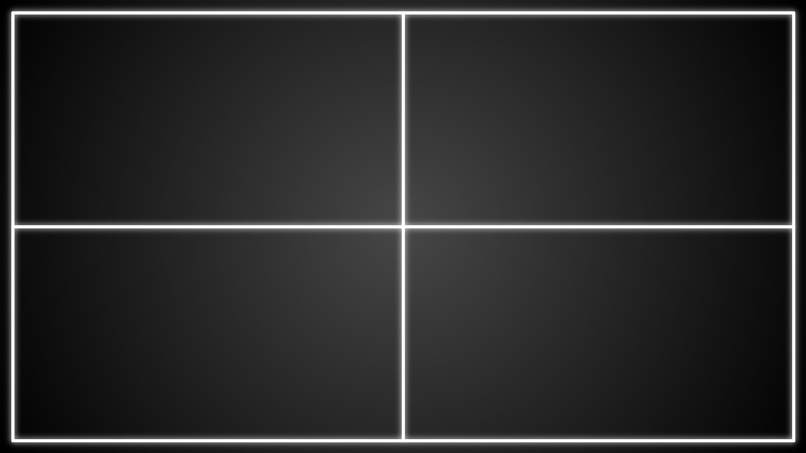

Pong
Settings:
Left Player
Keys:
W and S
controlled by computer
Name:
Right Player
Keys:
Arrow Up and Arrow Down
controlled by computer
Name:
Start Game!
Point for
Continue Game
won the game!
New Game
Punkt fuer
Continue Game
won the game!
New Game
